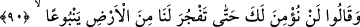

Ey öğütçü, ona hikmet tohumunu pek saçma.
90. Onlar: “Sen, dediler, bizim için yerden bir kaynak fışkırtmadıkça sana asla
inanmayacağız.”
İmam Vâhidî Esbâbü’n-nüzûl’de şöyle der: İkrime (r.a.), İbn Abbas (r.anhümâ)’dan
rivâyet etmiştir: Utbe, Şeybe, Ebû Süfyan, Nadr b. Hâris, Ebü’l-Buhterî, Velid b.
Muğîre, Ebû Cehil, Abdullah b. Ebî Umeyye, Ümeyye b. Halef ve Kureyş’in ileri
gelenleri Kâbe’nin arkasında toplandılar. Birbirlerine: “Muhammed’e bir haberci
gönderip onunla konuşun, tartışın, ta ki günah sizden gitsin” dediler. O’na: “Kavminin
eşrâfı seninle konuşmak için toplandılar.” diye haber gönderdiler. O da bunun üzerine
çabucak yanlarına geldi. Onların kendisi hakkında yeni bir kanâate vardıklarını
zannediyordu. Hz. Peygamber onların müslüman olmasını çok istiyor, doğru yola
gelmelerini arzu ediyor, ağırdan almaları zoruna gidiyordu. Yanlarına varıp oturdu.
Onlar şöyle dediler: “Ey Muhammed! Vallahi senin kendi kavmine yaptığını yapan
başka hiçbir Arap tanımıyoruz. Ecdâda küfrettin, dîni ayıpladın, akıllıları sefihlikle
itham ettin, ilahlara küfrettin, topluluğu parçaladın, kendinle bizim aramızda kötü olan
her şeyi yaptın. Şâyet bunu mal elde etmek için yaptıysan, seni aramızda en fazla mal
sâhibi yapacak kadar mallarımızdan toplayıp sana verelim. Şeref istiyorsan eğer, seni
başımıza emir yapalım. Yok eğer meliklik istiyorsan seni başımıza melik yapalım. Sana
gelip musallat olan bir cin sana gâlib geldiyse, seni iyileştirinceye veya elimizden gelen
her şeyi yapıncaya dek bu uğurda mallarımızı harcayalım.”
Allah Rasûlü (s.a.) şöyle buyurdu: “Şu söylediklerinizden hiçbiri bende yok. Size
getirdiğim şeyi ne sizin mallarınızı elde etmek ne aranızda şerefe nâil olmak; ne de
başınıza melik olmak için yaptım. Ancak Allah beni size peygamber olarak gönderdi.
Bana kitap indirdi ve size müjdeleyici ve uyarıcı olmamı emretti. Ben size Rabbimin
haberini tebliğ ettim, size nasihat ettim. Eğer size getirdiğim şeyi kabul ederseniz bu
sizin dünya ve âhiretteki nasîbinizdir. Şâyet reddederseniz benimle sizin aranızda
hüküm verene dek Allah’ın takdirine sabrederim.”
Onlar şöyle dediler: “Ey Muhammed, sana teklif ettiklerimizi kabul etmiyorsan, iyi
bilirsin ki insanlar arasında beldesi bizimkinden daha dar, malı daha az ve geçimi daha
dar olanı yoktur. Seni şu iddiâ ettiğin şeyle gönderen rabbinden bizim için iste de
üzerimize darlık veren şu dağları bizden uzaklaştırsın veya beldemizi genişletsin,
içinden Şam ve Irak nehirleri gibi nehirler akıtsın. Ölüp giden ecdâdımızı diriltsin.
Bizim için diriltilenler arasında Kusay b. Ka’b da olsun. Çünkü o doğru sözlü bir
ihtiyardı. Ona, söylediklerin doğru mu değil mi, soralım. Şâyet senden istediklerimizi
yaparsan senin doğruluğunu kabul eder ve böylece Allah katındaki yerini bilir,